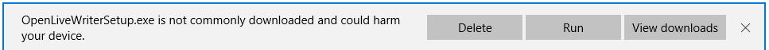
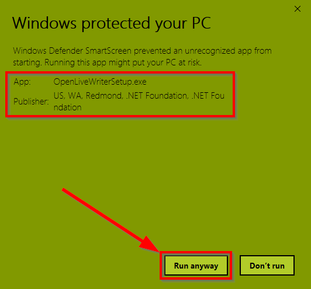

Our previous code signing certificate expired, and our new certificate is not yet recognized by Windows Defender SmartScreen. SmartScreen is reputation based, so once we have enough successful installations, SmartScreen will automatically recognize Open Live Writer. Until then, however, you may get a warning when you download and run the installer.
This tutorial shows you how to complete the installation until SmartScreen begins to recognize us.
Note that this application is also available on Windows 10 via the Windows Store. The latest update has been submitted to the store and is currently in the certification process.
You can read more about SmartScreen in the following locations:
Note: One possibility to immediately gain reputataion is to use and EV (Extended Validation) code signing certificate. In the case of Open Live Writer, we've recently done some work to code sign every software build, including nightly releases. EV Certificates won't work with our code signing infrastructure. Since this is a temporary issue for the new certificate, and we really want to have automated signed builds (for speedy future releases, signed nightly releases for beta testers, etc.) we've decided to not to go with an EV cert for now.